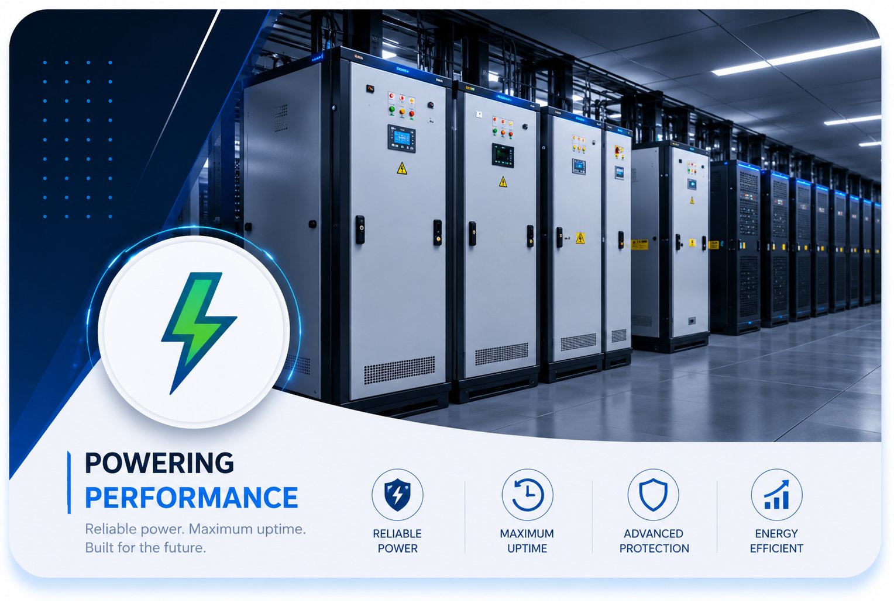

FinancialCommercial Bank Tier III Primary DC
Turn-key engineering of a 1.2MW dual-bus critical power facility with 2N generator backup, N+1 precision cooling, and biometric security in Dar es Salaam.
1.2 MWCapacity
48 RacksIT Footprint
99.999%Uptime SLA